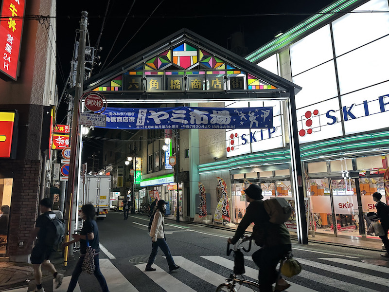
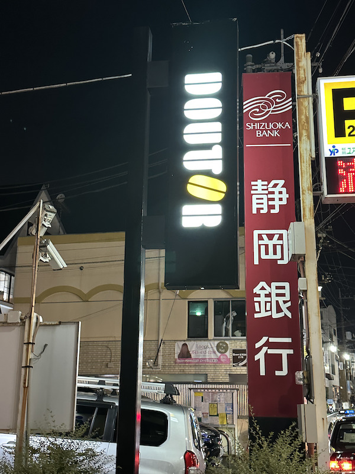
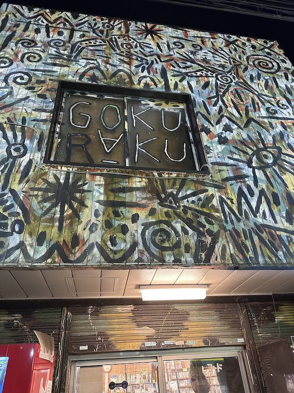
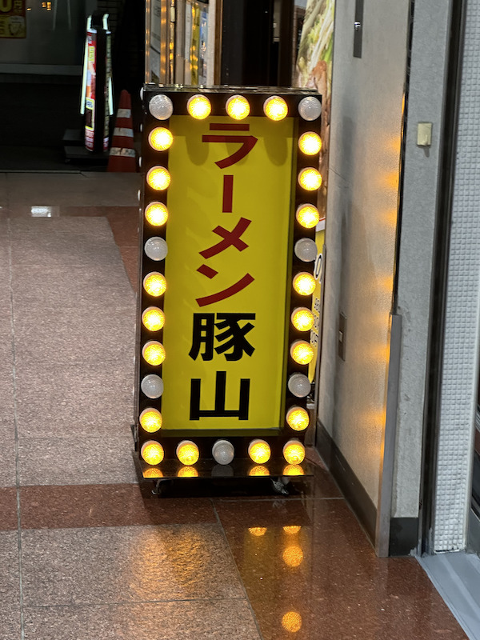

ロゴ、看板、サイン課題
白楽駅周辺！！

あまり個人情報を出したくないのだが、私は東横線の白楽周辺に住んでいる。
白楽駅を出たところに、六角橋商店街という商店街があり、とても賑やかだ。
裏道もあり、魅力的で面白い看板やサインが多いのでここらの通りから紹介していこうと思う。
1.DOUTOR

一つめの看板はドトールの看板だ。これは10月10日の夜に、私が撮った写真だ。
白楽駅を出て、すぐのところにある。道路を跨いで、マックと向かい合っているのが特徴だ。
ドトールなんてどこにでもあるじゃんと思うが、私が個人的にドトールのミラノサンドAが好きなのでよしとしよう。
この看板の特徴は、丸み帯びた文字であまりカチッとしすぎない雰囲気を出し、そしてOの部分がコーヒー豆になっているのが特徴だ。
それを白と黒を基調とした色で作っているので、カジュアルになりすぎない雰囲気がある。
2.gokuraku

二つめはCD、レコード屋さんのgokurakuだ。これも同じく10月10日の夜に、私が撮った写真だ。白楽駅を出て通りを右に曲がったところにある。
見てもらったらわかる通り、とてもすごい迫力だ。まるでバスキアのグラフティアートのように感じる。
多分、この店の店主がしたものだと思う。とても面白く、芸術的だ。
是非とも今度は店の中に入ってみたい。
3.ラーメン豚山

最後はラーメン豚山だ。三度めだが10月10日の夜に、私が撮った写真だ。白楽駅を出てすぐ、ほんとすぐ右にある。
二郎系なのかはわからないが、めちゃくちゃ大盛りのもやしと極太の麺、背脂とニンニクが特徴のラーメン屋である。
このポップな看板から見ると、とてもラーメン屋だとは思わない、、、。「ラーメン」と書いてあるのでそんなことはないか。
美味しすぎて、この看板を見るだけで涎が出るという心理学でいうところの「古典的条件付け」をされてしまっているという私情が入っているが、よしとする。